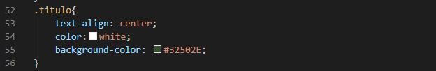

Hojas de estilo en cascada CSS
Las hojas de estilo en cascada CSS son las responsables de todos los estilos que se le aplican a una pagina web los cuales son: El color de la pagina, el tamaño y color de las letras, la manera en como esta organizada la pagina web etc.
sintaxis basica de CSS

Comó podemos ver en la imagen la sintaxis es muy basica donde (.titulo) es el selector y el contenido entre los corchetes es la declaración, a que nos referimos con esto: El selector es el tipo clase en este caso que se escogío del HTML para crearle un estilo el cual es denominado la declaración. el selector puede ser tambien compuesto de Clases, h1,h2..., header y demas, pero en lo general es muy recomendable el uso de clases ya que un selector como h1 nos dara un estilo para todos los h1 que tengamos en la pagina.
Esta es la visualización que optenemos por medio de el diseño que le dimos donde tomamos la clase (titulo) que es la que tiene contenido el titulo y la centramos le damos color de fondo y de letra, de esta manera funciona las hojas de cascada CSS.